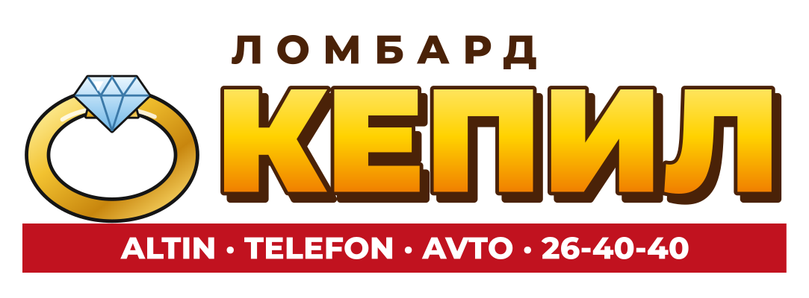

Kepil
Золото 585 принимаем по новой цене. Уточняйте в отделении.
♥ 65 · Comment
Kepil pawnshops, since 1997. Loans against gold, phones, laptops and cars, from 4.5% a month for up to three months; unredeemed gold sold in our own window. Twelve offices hold an exchange counter of the Chuy Commercial Bank at the bank's rates. 19 offices.
Ломбард «Кепил» с 1997 года. Займы под золото, телефоны, ноутбуки и автомобили, от 4,5% в месяц. Обменные пункты ЧКБ в двенадцати отделениях.
19 locations on Kartalar: Talas 10, Nurzhan 6, Iyık Janyl 2, Bazar-Korgon 1.
Золото 585 принимаем по новой цене. Уточняйте в отделении.
♥ 65 · CommentKepil lombardı ✓Ломбард «Кепил»Kepil lombardı ✓Ломбард «Кепил»Kepil lombardı ✓Ломбард «Кепил»Kepil lombardı ✓Ломбард «Кепил»Kepil lombardı ✓Ломбард «Кепил»Kepil lombardı ✓Ломбард «Кепил»Kepil lombardı ✓Ломбард «Кепил»Kepil lombardı ✓Ломбард «Кепил»Kepil lombardı ✓Ломбард «Кепил»Kepil lombardı ✓Ломбард «Кепил»Kepil lombardı ✓Ломбард «Кепил»Kepil lombardı ✓Ломбард «Кепил»Kepil lombardı ✓Ломбард «Кепил»Kepil lombardı ✓Ломбард «Кепил»Kepil lombardı ✓Ломбард «Кепил»Kepil lombardı ✓Ломбард «Кепил»No reviews yet.